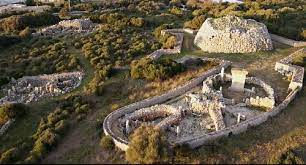
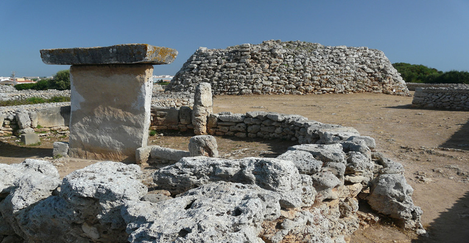

La Naveta Occidental de Biniac és considerada de «tipus intermedi», perquè data d'un període intermedi entre els dòlmens i les navetes de planta allargada. S'estima que és una de les més antigues de l'illa. Posseeix planta circular i exterior en talús, confeccionat a base de blocs escalabornats i col·locats en horitzontal. L'entrada es troba al sud de la construcció. Els treballs arqueològics van proporcionar dos tipus de materials: els d'origen pretalayótico i els pertanyents al talayótico inicial.
En posició central s'eleva un gran talaiot, un dels millors de l'illa, i al costat d'ell, la taula, l'altre element públic del poblat. Voltant els monuments megalítics, apareix una muralla de planta estrellada construïda en el segle XVIII. Això es deu al fet que en aquest lloc va asseure els seus bateries el duc de Crillón durant el setge a la fortalesa de Sant Felip, en 1856. Una cosa més allunyada s'alça un segon talaiot de menor altura, amb diverses cases de planta circular
Indicacions